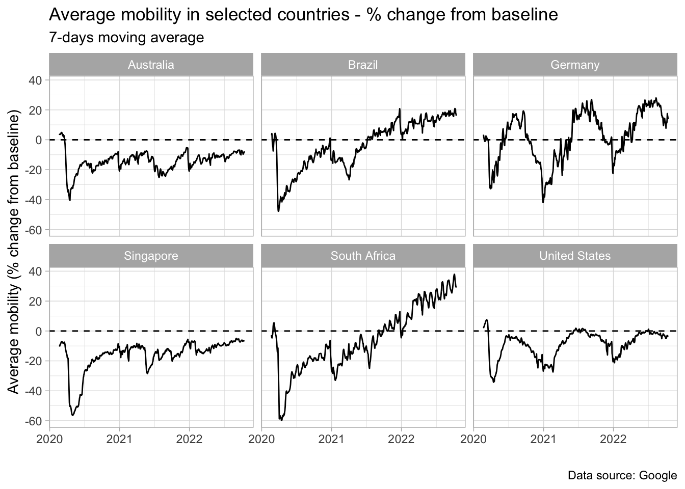
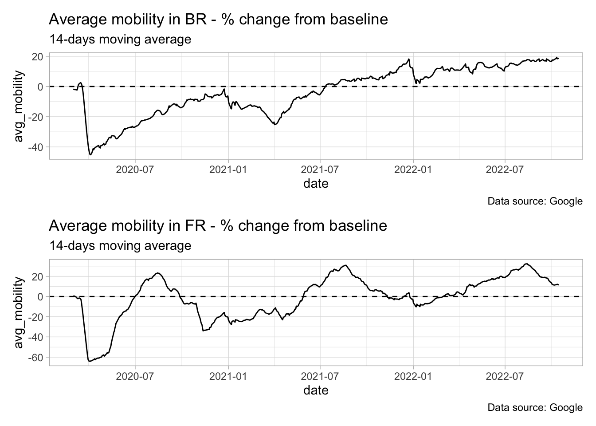

download.file(
url = 'https://www.gstatic.com/covid19/mobility/Region_Mobility_Report_CSVs.zip',
destfile = 'data/Region_Mobility_Report_CSVs.zip'
)2 Scaling-up tasks
Essential tools for modern economic analysis
In the introductory Chapter we saw how to import, organize and visualize data. However, little attention has been given to situations that require greater efficiency or scalability. This Chapter will take a step further in extending the previous knowledge to deal with more challenging situations.
For this exercise, we will use the Google Mobility data. Google started releasing this data on a daily basis right after the COVID outbreak spread across the world by mid-February 2020. Since then this data has been widely used for different purposes, from assessing/measuring economic activity to designing public policies. In spite of being a well-organized data set, it does offer the opportunity to do real-life data wrangling and to explore good practices from importing through visualizing.1
2.1 Importing data
Google offers two ways to download mobility data: you can either get a unique .csv file with all the available countries or you can get a .zip file with a separate .csv file for each country. We will stick with the latter for a simple reason: we are probably not interested in analyzing every single country and as data sets grow larger, it’s much more efficient to import only the data we are interested in.
We begin by downloading the .zip file to the data folder.
Now suppose we want to analyze a small group of countries. In this case, a better approach is to only import the .csv corresponding to these countries and then bind them together. After a brief inspection of the .zip file, we can see a clear pattern in file names: year_country-code_Region_Mobility_Report.csv. For example, the file containing data for Brazil in 2021 is: 2021_BR_Region_Mobility_Report.csv.
So, our first task is to produce a vector with the desired file names. This vector will be used later to extract the corresponding .csv from the .zip file. We can call Sys.Date() to recover the current year and use it as the end point of our sequence of years. Whether you are reading this book in 2022 or in 2030 and Google still releases mobility data with file names following the same pattern, then you can safely use the solution below.
library(tidyverse)
library(lubridate)
library(glue)
countries_codes <- c('BR', 'US', 'DE', 'ZA', 'SG', 'AU')
years <- seq(from = 2020,
to = year(Sys.Date()),
by = 1
)
google_filenames <-
cross2(years, countries_codes) %>%
map_chr(
.f = ~ .x %>%
glue_collapse(sep = '_') %>%
glue('_Region_Mobility_Report.csv')
)The cross2 function creates all the combinations between codes and years we need to replicate the first part of the file names. The final part is static, so it’s just a matter of pasting this piece into each element of the vector. We can check a piece of the result below:
[1] "2020_BR_Region_Mobility_Report.csv" "2021_BR_Region_Mobility_Report.csv"
[3] "2022_BR_Region_Mobility_Report.csv" "2023_BR_Region_Mobility_Report.csv"
[5] "2020_US_Region_Mobility_Report.csv" "2021_US_Region_Mobility_Report.csv"
[7] "2022_US_Region_Mobility_Report.csv" "2023_US_Region_Mobility_Report.csv"
[9] "2020_DE_Region_Mobility_Report.csv" "2021_DE_Region_Mobility_Report.csv"To finish up, we now resort to the map function to extract each file name from the .zip file. At this stage, I would like to draw your attention to something very important. Remember that we are ultimately interested in binding together all the .csv files in google_filenames. Since Google’s files contain columns for both country and date, we could safely use map_dfr to automatically stack the data – it would save us a few lines of code.
However, it could be that these files did not contain identifying columns – this information being only in the file name. It happens more often than not in real-life applications. So, if we naively stacked these files we would never be able to distinguish which country or date period each piece of the resulting data frame refers to.
Another issue that could cause us problems is if any of the elements in google_filenames did not exist. For example, if there wasn’t data for Germany in 2021. The map function would throw an error and interrupt the task, regardless all the other files were present. To prevent this problem, we can use the possibly function from purrr package, which replaces the error (or any side effect) with another output. In this case, we can replace the error by a NULL element in the list.
Therefore, the efficient strategy in this case is:
- Use the
mapfunction to import each file as an element in a list using thepossiblyfunction to avoid any error. - Assign meaningful names for each element of that list with
set_namesfrommagrittrpackage. - Call the
ldplyfunction fromplyrpackage to stack them.
The ldply function is very convenient here because it carries the names of the elements in the list into the resulting data frame as a new column. In addition, it also has several other useful features such as applying a generic function to each element of the list before stacking it.
In this example, the file names contain both the country code and year for each data set. Thankfully, we have a very simple pattern and we can extract the relevant information from the first seven characters of each element in our vector google_filenames. More complicated patterns would require the use of regular expressions.
mobility_data <-
map(
.x = google_filenames,
.f = possibly(
~ read_csv(unz('data/Region_Mobility_Report_CSVs.zip', .x)),
otherwise = NULL
)
) %>%
set_names(str_sub(
google_filenames, start = 1, end = 7)
) %>%
plyr::ldply(.id = 'year_country')2.2 Preparing the data
Now the we have successfully imported the data for the selected countries, it is time to produce useful content. Let’s begin with a closer look on the structure of the data set. We can remove the year_country column since it was only for pedagogical purposes and we won’t need it.
mobility_data %>%
dplyr::glimpse()Rows: 4,772,663
Columns: 15
$ country_region_code <chr> "BR", "BR", "BR", "~
$ country_region <chr> "Brazil", "Brazil",~
$ sub_region_1 <chr> NA, NA, NA, NA, NA,~
$ sub_region_2 <chr> NA, NA, NA, NA, NA,~
$ metro_area <lgl> NA, NA, NA, NA, NA,~
$ iso_3166_2_code <chr> NA, NA, NA, NA, NA,~
$ census_fips_code <chr> NA, NA, NA, NA, NA,~
$ place_id <chr> "ChIJzyjM68dZnAARYz~
$ date <date> 2020-02-15, 2020-0~
$ retail_and_recreation_percent_change_from_baseline <dbl> 5, 2, -2, -3, -1, 1~
$ grocery_and_pharmacy_percent_change_from_baseline <dbl> 4, 3, 0, -1, -2, 7,~
$ parks_percent_change_from_baseline <dbl> -5, -13, -12, -11, ~
$ transit_stations_percent_change_from_baseline <dbl> 8, 3, 9, 9, 8, 11, ~
$ workplaces_percent_change_from_baseline <dbl> 6, 0, 19, 15, 14, 1~
$ residential_percent_change_from_baseline <dbl> 0, 1, -1, -1, -1, -~We can see our data set has about 4.7 million rows and 15 columns. The most relevant information are stored in the columns ending with percent_change_from_baseline. These are precisely the measures of mobility for categorized places. The other columns of interest are those containing region and, of course, the column date. I recommend you to take some time exploring the data set. You will notice that the sub_region_* columns refer to regional breakdowns such as states and municipalities. They are NA for aggregate levels.
Suppose our ultimate goal is to have a plot with the average mobility across all the categories for each country in the national-level. We know in advance that it’s very likely that a strong seasonal pattern is present. For example, mobility in workplaces should be higher on weekdays and lower on weekends. The opposite should be true for parks. Creating a 7-days rolling mean of the original time series should solve the problem.
Finally, we need to invert the residential mobility since a higher (lower) residential mobility means a lower (higher) mobility elsewhere. So, if we are to aggregate all the mobility categories into one single measure (the average) they must point to the same direction.
Hence, our task is to produce a data frame with only the relevant variables. This involves, for each country, the following sequence of actions:
- Filter the national data.
- Invert the direction of the residential mobility (change the sign).
- Transform each mobility category column into a 7-days moving average.
- Create a column with the average mobility of categories.
- Remove the irrelevant variables.
This should not be quite a challenge and we can accomplish it with a few lines of code using the right features from dplyr package. I consider Items 3 and 4 the most important because we are tempted to offer a cumbersome solution that can be easily avoided with the proper tools. But before jumping to the best approach, let’s figure out how an inefficient approach might look like for Item 3. Using the roll_meanr function from the RcppRoll package to compute 7-days rolling means, our first solution could be something like this:
library(RcppRoll)
mutate_try1 <- mobility_data %>%
group_by(country_region) %>%
arrange(date) %>%
mutate(
retail_and_recreation_percent_change_from_baseline = roll_meanr(retail_and_recreation_percent_change_from_baseline, 7, na.rm = TRUE),
grocery_and_pharmacy_percent_change_from_baseline = roll_meanr(grocery_and_pharmacy_percent_change_from_baseline, 7, na.rm = TRUE),
parks_percent_change_from_baseline = roll_meanr(parks_percent_change_from_baseline, 7, na.rm = TRUE),
transit_stations_percent_change_from_baseline = roll_meanr(transit_stations_percent_change_from_baseline, 7, na.rm = TRUE),
workplaces_percent_change_from_baseline = roll_meanr(workplaces_percent_change_from_baseline, 7, na.rm = TRUE),
residential_percent_change_from_baseline = roll_meanr(residential_percent_change_from_baseline, 7, na.rm = TRUE)
) %>%
ungroup()This solution is terrible, nevertheless I come across it very often. Fortunately, we already have a way to avoid it. The first step towards a better solution would be to use the across function from dplyr package to replace the variable name in the right-hand side by .x. This will eliminate part of the redundancies.
library(RcppRoll)
mutate_try2 <- mobility_data %>%
group_by(country_region) %>%
arrange(date) %>%
mutate(
across(retail_and_recreation_percent_change_from_baseline, ~ roll_meanr(.x, 7)),
across(grocery_and_pharmacy_percent_change_from_baseline, ~ roll_meanr(.x, 7)),
across(parks_percent_change_from_baseline, ~ roll_meanr(.x, 7)),
across(transit_stations_percent_change_from_baseline, ~ roll_meanr(.x, 7)),
across(workplaces_percent_change_from_baseline, ~ roll_meanr(.x, 7)),
across(residential_percent_change_from_baseline, ~ roll_meanr(.x, 7))
) %>%
ungroup()Ok, we’ve made some progress in cutting part of the repetitions but we can certainly do better. Note that the variables we are interested in show a clear pattern: they all end with percent_change_from_baseline or simply baseline. We can take advantage of this to further improve our solution using select helpers. These are expressions that can be used to refer to specific patterns. For instance, here we could use the select helper ends_with to create the 7-days rolling mean for all the variables ending with baseline.
In addition, we can also use the argument .names to assign a glue-style name to the new variables: {.col} gets the column name and {.fun} gets the name of the function. This is great to identify which function we applied to each variable. Here, we can use a ma7d suffix which stands for moving-average 7-days.
library(RcppRoll)
mutate_topsolution <- mobility_data %>%
group_by(country_region) %>%
arrange(date) %>%
mutate(across(ends_with('baseline'), ~ roll_meanr(.x, na.rm = TRUE), .names = '{.col}_ma7d')) %>%
ungroup()The main lesson here is to avoid using variables names to compute the operations. Instead, whenever possible we must rely on the combination of across and select helpers. This avoids unnecessarily writing variables names so many times and therefore allows us to easily scale up the work.
The same reasoning applies to Item 4. Can you see how? Remember that Item 4 asks us to create a column with the average mobility across categories. Well, all these columns end with baseline. Therefore, we don’t need to rewrite all the variables names to get a new column with the mean – we can resort to select helpers. The only difference is that now we need an operation across the rows rather than across the columns.
We can accomplish it by using the rowwise function from dplyr package. Roughly speaking, this function turns every row of the data frame into a single group. Then you can perform your calculation on that group (the row). In addition, we have to replace the across function by the c_across function. The c_across is simply the equivalent of across when we’re using the rowwise mode. Remember to call ungroup to turn row-wise off and get back to the default column-wise mode when you don’t need operations across the rows anymore.
Below the full solution for Items 1 to 5.
library(RcppRoll)
mobility_final <- mobility_data %>%
filter(is.na(sub_region_1)) %>%
mutate(across(starts_with('residential'), ~ -1*.x)) %>%
group_by(country_region) %>%
arrange(date) %>%
mutate(across(ends_with('baseline'), ~ roll_meanr(.x, 7, na.rm = TRUE), .names = '{.col}_ma7d')) %>%
ungroup() %>%
rowwise() %>%
mutate(avg_mobility = mean(c_across(ends_with('ma7d')), na.rm = TRUE)) %>%
ungroup() %>%
select(date, country_region, ends_with('ma7d'), avg_mobility) 2.3 Plot information
We have mobility data for six countries and we should now decide how to plot them. Time series are usually better presented as lines, but there are some choices to be made. The most important one is whether we should display the countries data either as a single or in separate graphs. It depends on the purpose of the plot. If we are interested in observing the differences among countries in the same time period, then a single graph is a natural choice. On the other hand, if our goal is to observe in more detail the evolution in each country, then a separate plot is more convenient.
Let’s stick with the latter in this example using the facet_wrap feature. In this case we’re segmenting our plot by country, but we’re not constrained to segment it by only one variable. Besides, we could use the argument scales = 'free_y' to make the scales of each graph more adjusted to the limits of the data. It’s not desirable here as we want to make visual comparisons between countries straightforward.
mobility_final %>%
ggplot(aes(x = date, y = avg_mobility)) +
geom_line() +
facet_wrap(~ country_region) +
labs(title = 'Average mobility in selected countries - % change from baseline',
subtitle = '7-days moving average',
x = '',
y = 'Average mobility (% change from baseline)',
caption = 'Data source: Google') +
geom_hline(yintercept = 0, linetype = 2) +
theme_light()
2.4 From code to function
We have written the full code to import, prepare and visualize the data. Perhaps this analysis will become part of our routine or that of a stakeholder. And if that happens, it’s desirable that we can look at other countries as well. So a good practice in this case is to wrap our code as a function.
Creating a function is highly recommended whenever we have a repeated action on a different set of arguments. Here, we can think of three arguments that we would like to change eventually: the country, the time span and the window size of the rolling mean. Therefore our task is to gather all the code we have produced so far and to transform these three inputs into arguments of the function.
Note, however, that converting code into a function raises some issues. For example, when writing the code we used a vector to import data for the selected countries. It’s not the most efficient approach, because each file has a significant size and thus the execution may be very slow. This is a truly concern when we’re writing a function, because functions are most of the time used to loop over a large set of arguments – many countries, for example. Hence, we would like to process this task in parallel rather than serially.
Surely we can perform this parallel processing inside the function, but I always prefer to keep things simpler and more transparent. This means to write a function that plots only a single country and, if necessary, we can use map to get as many countries as we want – and eventually in parallel.2
Other minor yet important issue is that in a function we have to use the arguments as inputs everywhere, not only in obvious places. For example, when preparing the data we included a ma7d to the column names to indicate they were transformed into 7-days rolling mean. This label was also used in many actions later – when computing the average mobility, in the plot subtitle, etc. Therefore, we need to ensure that this argument will be considered in those actions as well. To achieve this, we’ll use glue() function to create custom labels.
plot_mobility <- function(country_code, start_date, end_date, ma_window){
library(lubridate)
library(tidyverse)
library(glue)
# Import data
countries_codes <- country_code
years <- seq(from = 2020,
to = year(Sys.Date()),
by = 1)
google_filenames <-
cross2(years, countries_codes) %>%
map_chr(
.f = ~ .x %>%
glue_collapse(sep = '_') %>%
glue('_Region_Mobility_Report.csv')
)
mobility_data <-
map_dfr(
.x = google_filenames,
.f = possibly(
~ readr::read_csv(unz('data/Region_Mobility_Report_CSVs.zip', .x)),
otherwise = NULL
)
)
# Prepare data
mobility_prep <- mobility_data %>%
filter(is.na(sub_region_1)) %>%
mutate(across(starts_with('residential'), ~ -1*.x)) %>%
group_by(country_region) %>%
arrange(date) %>%
mutate(across(ends_with('baseline'), ~ roll_meanr(.x, ma_window, na.rm = TRUE), .names = '{.col}_ma{ma_window}d')) %>%
ungroup() %>%
rowwise() %>%
mutate(avg_mobility = mean(c_across(ends_with(glue('ma{ma_window}d'))), na.rm = TRUE)) %>%
ungroup() %>%
select(date, country_region, ends_with('baseline'), avg_mobility)
# Output: plot
mobility_prep %>%
filter(between(date, ymd(start_date), ymd(end_date))) %>%
ggplot(aes(x = date, y = avg_mobility)) +
geom_line() +
labs(
title = glue('Average mobility in {country_code} - % change from baseline'),
subtitle = glue('{ma_window}-days moving average'),
caption = 'Data source: Google'
) +
geom_hline(yintercept = 0, linetype = 2) +
theme_light()
}We can now use the function plot_mobility to plot any country we want and with the desired time span and window for the rolling mean.
plot_mobility('BR', '2020-03-01', '2022-10-15', 14)Or we can use map to build the plot for several countries and the special operators from patchwork package 3 to arrange them in a convenient way.
library(patchwork)
countries <- c('BR', 'FR')
mobility_countries <- map(
.x = countries,
.f = plot_mobility,
'2020-03-01',
'2022-10-15',
14
) %>%
set_names(countries)
mobility_countries[[1]] / mobility_countries[[2]]
To finish up, we must keep in mind that a function that return a plot is not very flexible and maybe we should consider the output to be the processed data instead of the plot – or both. This would enable us to customize the plot and to perform other analysis as well. It’s not efficient either to download and prepare the data every time the function is called. The best solution in this case would require the processed data to be stored in a data base, for instance.
As of 2022-10-15, Community Mobility Reports are no longer updated, although all historical data remained publicly available.↩︎
The
furrrpackage makes it incredible simple to run themapfunction in parallel. See: https://furrr.futureverse.org/ for a comprehensive approach.↩︎See https://ggplot2-book.org/arranging-plots.html to learn how to use the special operators provided by
patchworkto arrange the plots.↩︎